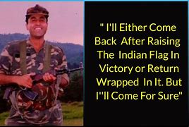
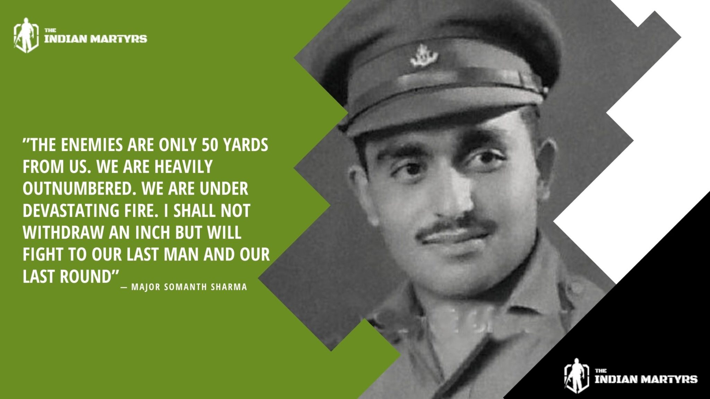
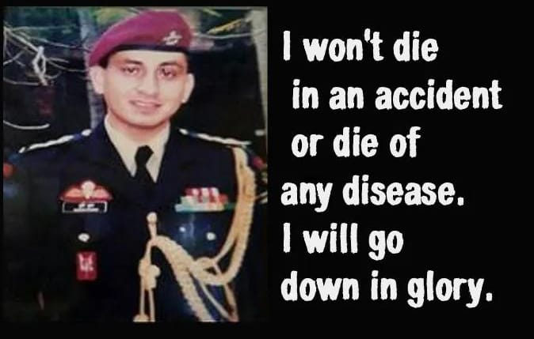
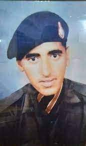
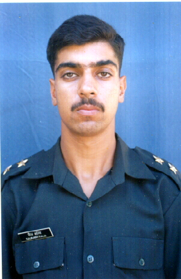
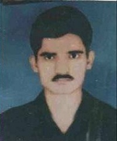

Born: 9 September 1974 Palampur, Himachal Pradesh, India
Captain Vikram Batra
Born: 9 September 1974 Palampur, Himachal Pradesh, India
Died: 7 July 1999 (aged 24) Kargil, Jammu and Kashmir (now Ladakh)
Years of service: 1997–1999
Rank: Captain
Unit: 13 Jammu And Kashmir Rifle
Awards: Param Vir Chakra
Captain Vikram Batra, an officer in the Indian Army, known for his heroic actions during the Kargil War in 1999,achieved martyrdom during the Kargil War in 1999. He was serving as a captain in the 13th battalion of the Jammu and Kashmir Rifles. On July 7, 1999, during the operations to capture Point 4875, also known as "Point 5140," Batra and his team encountered heavy enemy fire. Despite facing grave danger, he led his troops from the front and managed to successfully capture the strategic peak.
Read More

Born: 31 January 1923
Dadh, Kangra district, Himachal Pradesh
Major Somnath Sharma
Born: 31 January 1923
Dadh, Kangra district, Himachal Pradesh
Died: 3 November 1947 (aged 24)
Badgam, Jammu and Kashmir,
Years of service: 1942–1947
Rank: Major
Unit: 4th Battalion, Kumaon Regiment
Awards: Param Vir Chakra
He served in Burma during the Arakan Campaign of World War II, . Fighting in the Indo-Pakistani War of 1947-1948, Somnath Sharma was killed in action on November 3, 1947 while repulsing Pakistani infiltrators near Srinagar Airport. For his gallantry and sacrifice during the Battle of Badgam, he was posthumously awarded the Param Vir Chakra. His younger brother, Vishwa Nath Sharma, would later become the 14th Chief of the Army Staff of the Indian Army 12. His father, Amar Nath Sharma, was a military officer.Throughout his military career, Sharma was influenced by his uncle Captain K. D. Vasudeva’s gallantry in action.......
Read More

Born: 24 May,1969
Banuri, Palampur,Kangra district, Himachal Pradesh
Major Sudhir Kumar Walia
Born: 24 May,1969
Banuri, Palampur,Kangra district, Himachal Pradesh
Died: 29 August 1999(aged 30)
Haphruda,Kupwara, Jammu and Kashmir
Years of service: 1988–1999
Rank: Major
Unit: 9 Para(Special Forces)4 Jat
Awards: Ashok Chakra,
Sena Medal(Bar),
Sena Medal
Major Sudhir Kumar Walia, was an officer of the Indian Army, who served in the elite 9 Para (SF). He graduated from the Indian Military Academy and was commissioned as a second lieutenant in the 4th Battalion, The Jat Regiment on 11 June 1988. He was a member of the Indian Peace Keeping Force (IPKF), who were sent to Sri Lanka on a peace mission. After he returned from Sri Lanka, he opted for the 9th Battalion, Para (SF), a special forces unit of the Indian Army that specializes in mountain operations. Walia was promoted as a captain on 11 June 1993,and was awarded the Sena Medal in 1994 on two occasions for his gallantry while combating militancy in Jammu and Kashmir. For his bravery, he was posthumously awarded the Ashoka Chakra, the highest peacetime military decoration in India.
Read More
Captain Amol Kalia
Born: 26 February 1974
Chintpurni,Una District of Himachal Pradesh
Died: 8 June,1999
Batalik Yaldor Sector,Ladakh
Years of service: 1994–1999
Rank: Captain
Unit: 12 JAK LI
Awards: Vir Chakra
Captain Amol Kalia was specially called for this operation from Delhi because of his expertise.Captain Amol Kalia had an ir-replaceable experience of staying at the Siachen Glacier -''the highest battle field of the world'' for more than 120 days. In this operation, Captain Amol Kalia along with 13 other ranks made the supreme sacrifice in the highest traditions of the Indian Army. But for the selfless devotion to duty marked with exemplary couragedisplayed by these gallant soldiers, the recapture of this vital position would not have been possible. For his bravery, Capt Amol Kalia was decorated with the Vir Chakra by the President of India.
Read More

Born: January 26, 1974
Kalara village ,Shimla district, Himachal Pradesh.
Rifleman Shyam Singh
Born: January 26, 1974
Kalara village ,Shimla district, Himachal Pradesh.
Died: 4 July,1999
Mushkoh Valley, Jammu and Kashmir
Years of service: 1994–1999
Rank: Rifleman
Unit: 13 JAK RIF
Awards Vir Chakra (Posthumous)
Rifleman Shyam Singh always aspired to join the Army and with that aim he joined the NCC at his College. After one year in College, to realise his dream,attended an Army recruitment rally in Shimla and enrolled in 13 JAK RIF on 29 December 1994 at the age of 20. Rifleman Shyam Singh volunteered to be part of Charlie company commander's assault team tasked to capture area Flat Top at Point 4875 in Mushkoh Valley during OPERATION VIJAY. Rifleman Shyam Singh's heroic, unselfish, and superhuman conduct inspired his comrades, resulting in the conquest of the strategically crucial feature. He showed incredible bravery in the face of the enemy and paid the ultimate price for the country. He was awarded Vir Chakra posthumously.
Read More

Born 29 June 1976
Palampur district in Himachal Pradesh.
Captain Saurabh Kalia
Born 29 June 1976
Palampur district in Himachal Pradesh.
Died 9 June 1999
Kargil, Jammu and Kashmir
Years of service 1998–1999
Rank Captain
Unit 4 Jat
The name of that valiant heroCaptain Saurabh Kalia belonged from 4th JAT Regiment of the Indian Army.. Captain Saurabh Kalia was selected for the Indian Military Academy in August 1997 through the Combined Defence Services Examination and was commissioned on 12 December 1998. He was posted to the 4th battalion Jat Regiment in the Kargil Sector, where he arrived in mid-January 1999 after reporting at the Jat Regimental Centre, Bareilly, on 31 December 1998. Saurabh Kalia was an officer of the Indian Army who was killed during the Kargil War while being held as a prisoner of war by the Pakistan Army. He and five soldiers in his patrol group were captured by Pakistani troops following a gunfight at the Line of Control and allegedly tortured prior to their execution; the Government of Pakistan has rejected all allegations of Indian military personnel being tortured while in Pakistani custody.
Read More

Born January 17,1965
Sakroli Village, district Kullu, Himachal Pradesh.
Havaldar Dola Ram
Born January 17,1965
Sakroli Village, district Kullu, Himachal Pradesh.
Died 3rd July 1999
Kargil,Jammu and Kashmir
Years of service 1985–1999
Rank Havaldar
Unit 1 Para<
Awards Sena Medal (Posthumous)
Havaldar Dola Ram was born on 17th January 1965 in village Sakroli of Nirmand tehsil of Kullu district in Himachal Pradesh. He completed his primary education from Govt high school Nithar. After he completing his education Hav Dola Ram joined Indian Army on 5th August 1985 and was enrolled in the Parachute Regiment.During Kargil operation in the year 1999, Dola Ram’s unit was deployed in J&K.On 3rd July 1999, Havaldar Dola Ram while fighting the Pakistani intruders laid down his life and attained martyrdom. For his act of bravery and valour in the face of enemy he was awarded with Sena Medal posthumously.
Read More
Rifleman Rakesh Singh
Born
District Kangra, Himachal Pradesh.
Died 6th February 2022
West Kameng district of Arunachal Pradesh near the Indo-China border.
Rank Rifleman
Service Army
Unit 19 JAK Rif Battalion
Awards Sena Medal (Posthumous)
Rifleman Rakesh Singh eventually joined the Army in the year 2014 after completing his school education.He was recruited into the 19 JAK Rif battalion of the Jammu and Kashmir Rifles Regiment, an infantry Regiment known for its brave soldiers and rich history of various battle honours.During 2022, Rfn Rakesh Singh's unit 19 JAK Rif was deployed in the West Kameng district of Arunachal Pradesh near the Indo-China border.As the troops were traversing through the planned route in Chume Gyater area near Yangtse, closer to China border, a horrific avalanche struck them. A massive rescue operation was launched by the army and after searching for nearly two days, the rescue team eventually managed to locate the bodies of the soldiers on 08 Feb 2022, but by that time they had lost their lives owing to prolonged exposure to extreme cold conditions.Rfn Rakesh Singh was a brave and committed soldier, who laid down his life in the line of his duty at the young age of 26 years.
Read More
Rifleman Sunil Jang Mahat
Born 3 November 1978
Khanyara District Kangra,Himachal Pradesh.
Died 15 May ,1999
Batalik sector of Kargil
Rank Rifleman
Unit 1/11 Gorkha
Service Army
Operation Op Vijay
Rifleman Sunil Jang Mahat joined the Army after completing his school education.He was recruited into 1/11 GR battalion of 11 Gorkha Rifles Regiment, an infantry Regiment well known for its intrepid soldiers and numerous battle exploits. Rfn Sunil Jang had keen interest in sports during his student days, which continued during his military training period too. After completing his training, he got posted to the unit that was deployed in Palampur in Himachal Pradesh. During May 1999, as Rfn Sunil Jang’s unit was preparing to move form its field location in Siachen to a peace area in Pune, the situation at the LOC was hotting up with large scale intrusion having been detected in various sectors. As a result, 1/11 GR was inducted into the Batalik sector on 09 May 1999.
Read More